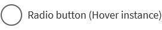
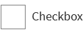
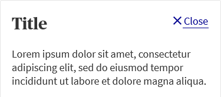

The colours below pass accessibility, we therefore recommend using them where possible.
Main colours
#00008F
AXA blue is the primary color used for AXA branding, due to the nature of the colour we also used this blue as
Icons, Primary button, Primary ghost button, links.
Icons
Primary button
Primary ghost button
Links
#C24E00
Secondary colour used for less important CTA When the primary blue is used as the main CTA button, Primary ghost button.
Secondary button
Secondary ghost button
#027180
Teal has been used for form elements e.g
Single answer buttons, radio buttons and check boxes.
Default
Selected
Radio button
Check box
#333333
Used mainly for text colors e.g Heading and paragraphs.
Heading
Paragraph
#5f5f5f
We use this colour for fonts that are inactive to the user to meet AA accessibility requirements. We also use this same colour for radio button and checkboxes hover state.
Button

Radio button on hover
Check box on hover
#7f7f7f
We use this grey for default border colour for any interactive elements such as radio buttons, checkboxes and buttons.
Disabled
Single answer button
Radio button

Check box
#e5e5e5
We use this grey for default border colour for any non interactive elements such as the border for modals.

Default border
#fafafa
We use this grey for default background hover state.
Background hover state
#C91432
We use this color to display error and alerts.
Error sticky bar
List of error in sticky bar
Form field error
#148936
We use this color to display success.
Your quote is saved
Sticky bar indicates the success of clearing all errors